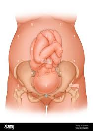

Yes! The end of your pregnancy is in sight now, and the big day approaches. Keep in mind that your little one isn’t technically considered full term and ready for birth until 39 weeks and that only about 1 in 20 women give birth on their exact due date. So, you both may have a few more weeks of growing to do, but you’re almost there! Read on to learn more about the kinds of things that are in store for you when you’re nine months pregnant.
When you’re nine months pregnant, some of the normal pregnancy symptoms you might experience include:
This symptom might be getting a little old right about now, but as your baby continues to grow and drop lower into your pelvis in preparation for birth, she also continues to put pressure on your bladder. You’ll probably be making more bathroom trips during the day and also at night. If you find that you’re leaking urine when you laugh or sneeze, you may want to wear a panty liner.
It may seem as if every part of you is bigger now, including your legs and feet. In most cases, extra fluid retention and hormones are to blame. And, as your uterus grows, it puts pressure on certain veins, which can reduce or slow the flow of blood from the lower half of your body to the upper half. To get some relief, put your feet up whenever possible, and avoid standing for long periods of time.
If you feel a numbness or tingling in your hands or wrists, it could be carpal tunnel syndrome. The carpal tunnel is a system of bones and nerves on the palm side of your wrist. Increased fluid retention during pregnancy can put extra pressure on these bones and nerves, causing that tingling or numb sensation you’re feeling. This discomfort usually subsides after you give birth, but chat with your healthcare provider if you’d like to get some relief sooner.
Just like you, your baby is also getting ready for her birth day. One of the things she is doing is dropping lower into your pelvis. For you, the downside of this is that you’ll likely feel more pressure on your pelvis, bladder, and hips. The upside is that you may be able to breathe a little easier, because as she drops she will likely put less pressure on your lungs and diaphragm.
Another symptom you may be familiar with by the time you’re nine months pregnant is back pain. As your belly grows, your center of gravity changes. Meanwhile, pregnancy hormones relax the joints in your pelvis in preparation for childbirth. Both of these can cause back pain. To give yourself some relief, try to practice good posture (prenatal yoga can help with this), wear supportive, comfortable shoes, and avoid doing any lifting, if at all possible. A gentle massage or a well-positioned hot or cold pack can also feel good.
You might be noticing some changes to your skin when you’re nine months pregnant. Those hormones coursing through your body during pregnancy can increase the production of melanin, which can result in brownish patches appearing on your face (known as melasma) or a dark line down the middle of your lower belly (known as the linea nigra).
These are a fact of life for many moms-to-be. They’re not preventable, but they often fade after you give birth. Use a gentle moisturizer to keep your skin hydrated and help ward off any itchiness that may come from your skin stretching as it expands to accommodate your growing baby.
Your baby’s lungs develop right up until birth as they get ready for her first breath and that all-important first cry. Soon you’ll be amazed by how much noise she can make! She’s also continuing to pack on a little more weight — as much as half a pound each week until she’s born.
At 39 weeks, your pregnancy is considered full term. Read our explainer on full term pregnancy for all the information you need on what terms like preterm, early term, and late term mean
At some point this month, most babies move into a head-down position, if they haven't done so already. This is called a vertex presentation. If your baby is positioned with her buttocks or feet first, this is known as a breech position. If your baby is breech close to your due date, your healthcare provider may attempt to turn her into a head-down position manually; in some cases, you could be offered a cesarean birth if your provider thinks this is the safest option for you and your baby. It’s also possible that your little gymnast may change positions on her own more than once before she’s born. Your provider will be keeping an eye on her positions at your weekly checkups.
By the time you give birth, your baby will be about 18 to 20 inches long and weigh 6 to 9 pounds. Read more about the average baby birth weight and what factors can affect it.
Check out these illustrations for a glimpse at what your baby might look like when you’re nine months pregnant:
You might be feeling big, tired, and impatient at this point, and rightfully so! At this stage of pregnancy, your healthcare provider may recommend a screening for GBS (group B streptococci), which are bacteria that can lead to urinary tract infections in moms-to-be, and, on rare occasions, can be passed to the baby as she moves through the birth canal during delivery. If your test is positive, you’ll likely be given an antibiotic during labor to help prevent passing the bacteria to your baby. Cramps or contractions can be signs of labor at nine months pregnant, so it’s important to remember that there’s a difference between Braxton Hicks contractions, which are practice contractions, and the real thing. Here are a few of the main differences you might notice:
If your water breaks, or you notice mucus plug discharge, these are two other signs that your body is getting ready to go into labor.
At nine months pregnant, you’re so close to the end of your third trimester and your pregnancy! You might still be wondering how many weeks nine months pregnant is. There is no simple answer, as the weeks of pregnancy don't fit evenly within nine distinct months. This final month could start anywhere from 33 weeks to 36 weeks and "end" somewhere around 40 weeks with the birth of your baby.